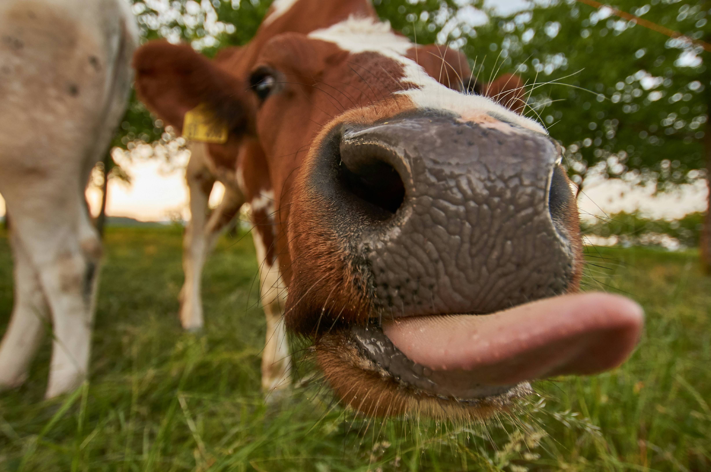
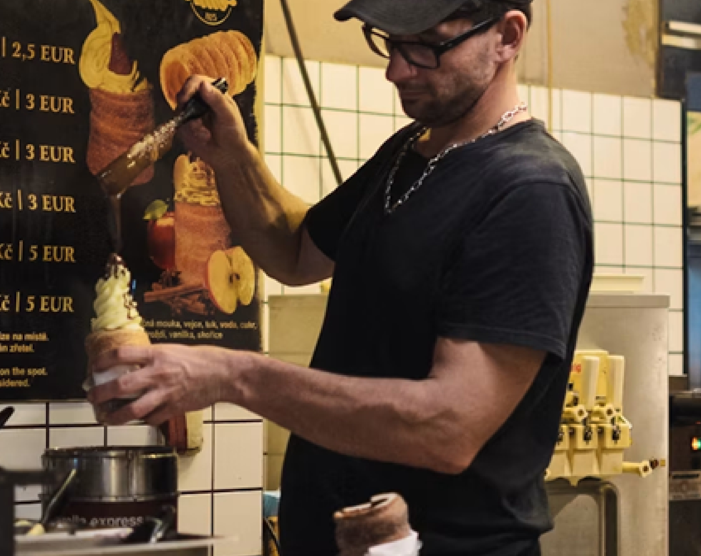

Experience ice cream in a whole new world.
At Lickies, we aim to bring you into a
world of exotic toppings to combine with your favourite flavours.
Lickies was founded in 2023 by a group of ice cream enthusiasts. Starting off as a dream, and then a tiny ice cream stall, lickies has grown into a unique ice cream brand that is enjoyed by many.
Spending these last 3 years and counting, lickies has been testing countless recipes, saving the very best for our customers. We even travelled around the globe, collaborating with local suppliers to source out the best ingredients for you and for our Earth.


Our goal is unforgettable ice cream experience that you won't find anywhere else. We believe that ice cream is more than just a dessert - it's an experience that should be savoured and enjoyed with every lick. Each scoop is created with quality ingredients, creativity, and passion, ensuring each visit to Lickies is a memorable one.
At Lickies, we scoop with purpose! Supporting local communities and giving back is at the heart of everything we do. That’s why 20 cents from every single scoop goes directly to helping those in need. We believe that together, we can make the world a sweeter place.
We are deeply committed to sustainability and strive to minimize our environmental footprint by using eco-friendly packaging and sourcing our ingredients responsibly. On our dairy farms, we practice rotational grazing—moving our cows between fields to allow the grass to regrow, which drastically improves soil health and biodiversity. Furthermore, our farms utilize advanced manure recycling, innovative Cow Dung Eco-Brick shelters for our herds, water conservation, and composting.